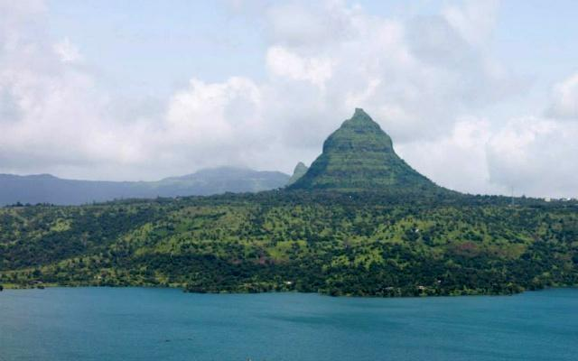
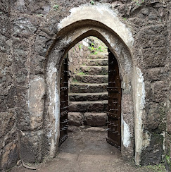
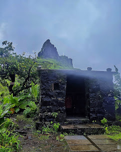

तुंगगड किल्ला
Location : Click Here For Google Map
- माहिती
- तुंगगड किल्ला महाराष्ट्र राज्याच्या रायगड जिल्ह्यात स्थित एक ऐतिहासिक किल्ला आहे. हा किल्ला १७व्या शतकात शिवाजी महाराजांनी मराठा साम्राज्याच्या संरक्षणासाठी बांधला होता. किल्ला समुद्रसपाटीपासून १,१०० मीटर उंचीवर आहे.
किल्ल्याची रचना त्या काळातील शुद्ध मराठा स्थापत्यशास्त्राचे एक उत्तम उदाहरण आहे. किल्ल्याच्या तटबंदीच्या भिंती, त्यातील प्रवेशद्वार आणि गडाच्या परिसरातील गूढ गुप्तमार्गांसह याची रचना एक संरक्षणात्मक गड म्हणून होती. किल्ल्याच्या शिखरावरून सर्व परिसराचा सुंदर नजारा दिसतो, जो पर्यटकांना एक अद्वितीय अनुभव देतो.
किल्ल्याच्या अंतील संरचनांमध्ये प्राचीन गडाच्या पाण्याच्या टाक्या, शस्त्रागार, तसेच गोपनीय मार्ग समाविष्ट आहेत. आजकाल, तुंगगड किल्ला एक लोकप्रिय ट्रेकिंग स्थान आहे आणि पर्यटक व ट्रेकर्स या किल्ल्याला भेट देतात.
Explore the historical beauty


